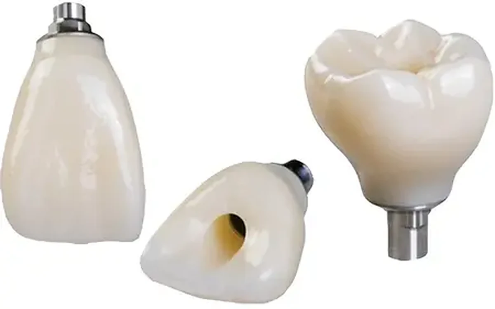
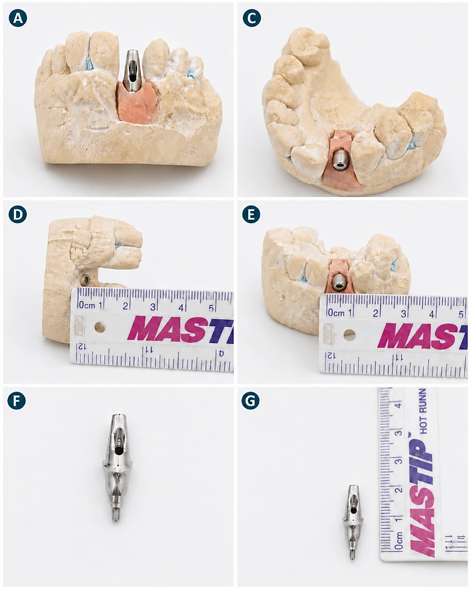

All-on-4
Restauro protesico fisso full-arch supportato da quattro impianti e realizzato sulla base dei dati clinici e protesici forniti.
Riabilitazioni protesiche su impianti
Laborator Dentar CDL realizza la componente protesica per riabilitazioni fisse full-arch in base al piano del dentista, alla posizione degli impianti, allo spazio protesico e al sistema implantare utilizzato.

Termini che non sono equivalenti
All-on-4 e All-on-6 indicano principalmente una riabilitazione su quattro o sei impianti. Toronto e Thimble descrivono varianti di struttura protesica definite in base al piano del caso.
Restauro protesico fisso full-arch supportato da quattro impianti e realizzato sulla base dei dati clinici e protesici forniti.
Riabilitazione fissa supportata da sei impianti, con design adattato alla distribuzione implantare e allo spazio disponibile.
Restauro fisso implantare su sottostruttura avvitata, con ripristino dei denti e, quando indicato, del volume gengivale.
Struttura full-arch con framework e corone individuali, progettata per un accesso modulare ai componenti.
Restauri provvisori realizzati nelle fasi definite dal dentista, in base ai dati disponibili e al protocollo del caso.
Restauri definitivi personalizzati realizzati dopo la validazione delle fasi cliniche e dei parametri estetici e funzionali.

Informazioni necessarie
Ruolo del laboratorio
Verifichiamo i dati ricevuti e segnaliamo eventuali dubbi prima della progettazione.
La configurazione viene adattata allo spazio disponibile, al materiale e al piano trasmesso.
Piattaforme e componenti vengono confermati per ogni caso.
Le fasi e le validazioni vengono definite con il dentista responsabile del caso.
Domande frequenti
No. All-on-4 descrive una configurazione su quattro impianti, mentre Toronto descrive un tipo di struttura protesica.
Non in modo universale. Alcuni design condividono elementi comuni, ma i termini devono essere chiariti per ogni caso.
No. Il laboratorio realizza la componente protesica secondo l’indicazione e il piano stabiliti dal dentista.
Sì. I casi possono essere gestiti digitalmente e tramite corriere espresso dopo aver concordato le fasi.
Caso full-arch